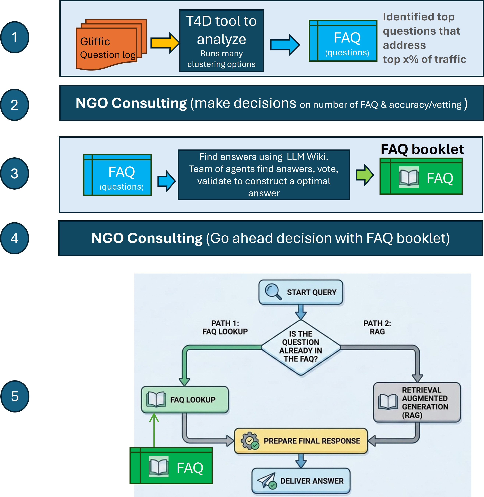
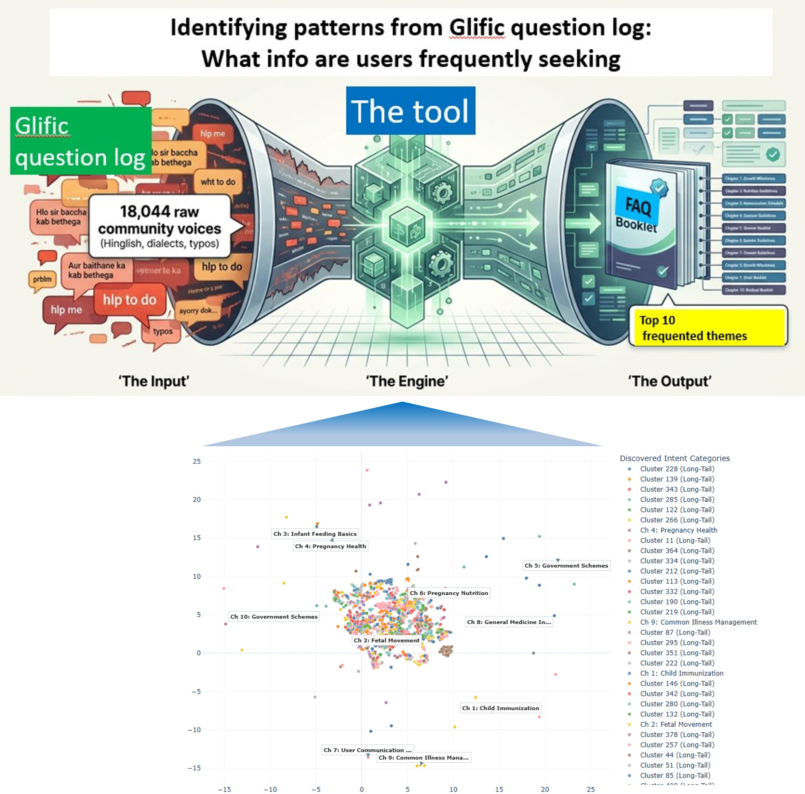
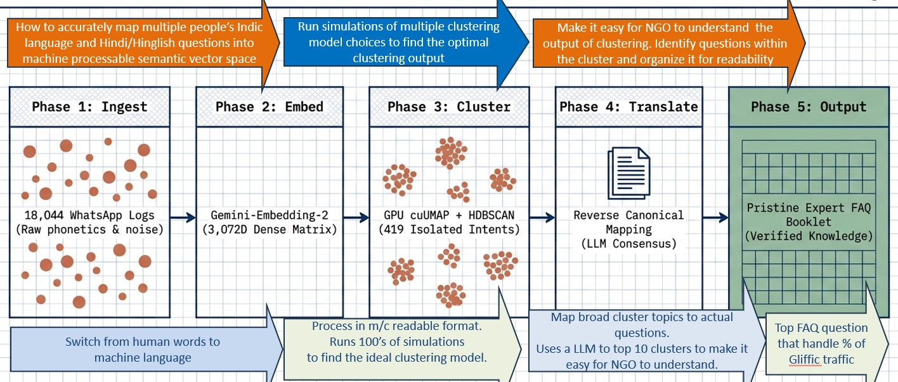
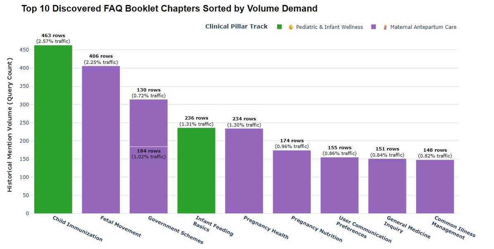

| Resource / Topic | Quick Link |
|---|---|
| FAQ Booklet (Top 10 Themes) | Open FAQ Booklet - automatically identified after running 12 simulations for the best way to map 18000 questions to 400 FAQ themes |
| Top X Topics 3D distrbution | View 3D interactive - page may load slowly |
| Top X Topics Breakdown | View Breakdown |

This tool analyzes the Gliffic Question funnel to identify Frequently Asked Themes/Questions.


frequented Themes/Questions.

| FAQ Booklet (Top 10 Themes) | Open FAQ Booklet |
| Top X Topics 3D distrbution | View 3D interactive - page may load slowly |
| Top X Topics Breakdown | View Breakdown |
| Top X Topics Breakdown | The design |